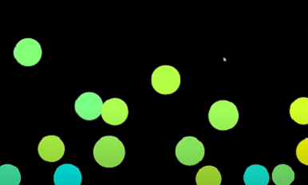
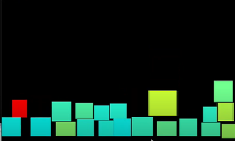

Мой первый 2D движок
Целью этого проекта было наглядное демонстрирование принципов создания простейшей симуляции физики в 2d. В этом прокте удалось реализовать лишь circle и AABB, и то криво.
 Почему я считаю этот проект неудавшимся?
Во-первых, я провёл невероятное количество рассчётов и потратил огромное количество времни впустую. Фактически, на это должна была уйти максимум неделя. Работал я хоть и максимально усердно, но максимально неэффективно.
Во-вторых, не удалось симулировать не то, что полигоны, даже OBB, хотя именно над этим вопросом пришлось работать очень долго. К сожалению, у меня недостаточно опыта и навыков, чтобы создавать что-то подобное, разве что велосипед изобрёл. Трёхколёсный.
Однако, та модель коллизии, которую я применял для столкновения двух ограничивающих прямоугольников (AABBvsAABB), нашла своё применение в физике столкновения игрока и блоков в игре Isn't hard 2. В этой игре теперь больше нет ни единой проблемы с коллизией и застреванием игрока в текстурах. Как итог, проект удался, хотя планировалось куда больше, чем вышло. Так сказать, на троечку.